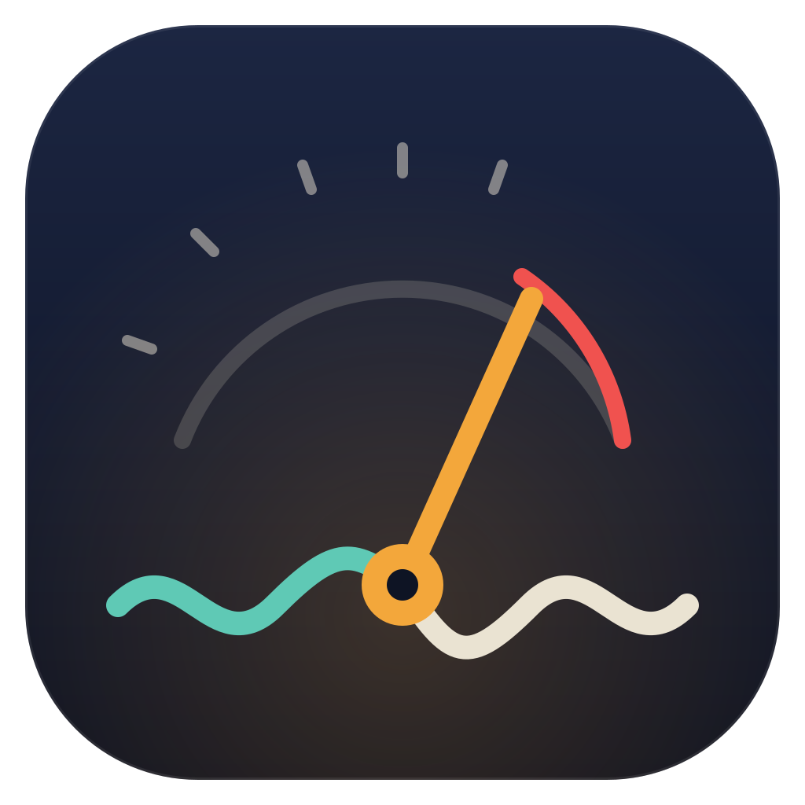

<!doctype html>
<html lang="pl">
<head>
  <meta charset="utf-8">
  <meta name="viewport" content="width=device-width, initial-scale=1">
  <title>Sesja</title>
  <link rel="stylesheet" href="style.css">
</head>
<body>
  <!-- Zestaw ikon (rysowane ręcznie, linia 1.7 px na siatce 24) -->
  <svg width="0" height="0" style="position:absolute" aria-hidden="true">
    <defs>
      <symbol id="i-studio" viewBox="0 0 24 24" fill="none" stroke="currentColor" stroke-width="1.7" stroke-linecap="round"><path d="M6 4v16M12 4v16M18 4v16"/><rect x="3.5" y="13" width="5" height="3" rx="1" fill="currentColor"/><rect x="9.5" y="7" width="5" height="3" rx="1" fill="currentColor"/><rect x="15.5" y="11" width="5" height="3" rx="1" fill="currentColor"/></symbol>
      <symbol id="i-chat" viewBox="0 0 24 24" fill="none" stroke="currentColor" stroke-width="1.7" stroke-linejoin="round"><path d="M4 5.5A1.5 1.5 0 0 1 5.5 4h13A1.5 1.5 0 0 1 20 5.5v9a1.5 1.5 0 0 1-1.5 1.5H10l-4.5 4v-4h0A1.5 1.5 0 0 1 4 14.5z"/><path d="M8 9h8M8 12h5" stroke-linecap="round"/></symbol>
      <symbol id="i-music" viewBox="0 0 24 24" fill="none" stroke="currentColor" stroke-width="1.7" stroke-linecap="round"><path d="M3 12h2M7 8v8M11 5v14M15 9v6M19 7v10M21 12h0"/></symbol>
      <symbol id="i-comment" viewBox="0 0 24 24" fill="none" stroke="currentColor" stroke-width="1.7" stroke-linejoin="round"><path d="M12 21s-6.5-5.6-6.5-11a6.5 6.5 0 0 1 13 0c0 5.4-6.5 11-6.5 11z"/><path d="M9.5 9.5h5M9.5 12h3" stroke-linecap="round"/></symbol>
      <symbol id="i-reaper" viewBox="0 0 24 24" fill="none" stroke="currentColor" stroke-width="1.7" stroke-linecap="round" stroke-linejoin="round"><path d="M9 3v4M15 3v4"/><path d="M6.5 7h11v3.5a5.5 5.5 0 0 1-11 0z"/><path d="M12 16v5"/></symbol>
      <symbol id="i-changes" viewBox="0 0 24 24" fill="none" stroke="currentColor" stroke-width="1.7" stroke-linecap="round"><circle cx="12" cy="12" r="8.5"/><path d="M12 7.5V12l3 2"/></symbol>
      <symbol id="i-heart" viewBox="0 0 24 24" fill="none" stroke="currentColor" stroke-width="1.7" stroke-linejoin="round"><path d="M12 20s-7.5-4.6-7.5-10.2A4.3 4.3 0 0 1 12 7.2a4.3 4.3 0 0 1 7.5 2.6C19.5 15.4 12 20 12 20z"/></symbol>
      <symbol id="i-settings" viewBox="0 0 24 24" fill="none" stroke="currentColor" stroke-width="1.7" stroke-linecap="round"><path d="M4 7h10M18 7h2M4 17h4M12 17h8"/><circle cx="16" cy="7" r="2"/><circle cx="10" cy="17" r="2"/></symbol>
      <symbol id="i-play" viewBox="0 0 24 24" fill="currentColor"><path d="M8 5.5v13a1 1 0 0 0 1.5.86l10.5-6.5a1 1 0 0 0 0-1.72L9.5 4.64A1 1 0 0 0 8 5.5z"/></symbol>
      <symbol id="i-pause" viewBox="0 0 24 24" fill="currentColor"><rect x="6" y="5" width="4" height="14" rx="1.2"/><rect x="14" y="5" width="4" height="14" rx="1.2"/></symbol>
      <symbol id="i-check" viewBox="0 0 24 24" fill="none" stroke="currentColor" stroke-width="2" stroke-linecap="round" stroke-linejoin="round"><path d="M5 12.5l4.5 4.5L19 7.5"/></symbol>
      <symbol id="i-x" viewBox="0 0 24 24" fill="none" stroke="currentColor" stroke-width="2" stroke-linecap="round"><path d="M6 6l12 12M18 6L6 18"/></symbol>
      <symbol id="i-alert" viewBox="0 0 24 24" fill="none" stroke="currentColor" stroke-width="1.8" stroke-linecap="round"><path d="M12 3.5l9 16H3z" stroke-linejoin="round"/><path d="M12 10v4M12 17h0"/></symbol>
      <symbol id="i-folder" viewBox="0 0 24 24" fill="none" stroke="currentColor" stroke-width="1.7" stroke-linejoin="round"><path d="M3.5 7.5A1.5 1.5 0 0 1 5 6h4l2 2h8a1.5 1.5 0 0 1 1.5 1.5v8A1.5 1.5 0 0 1 19 19H5a1.5 1.5 0 0 1-1.5-1.5z"/></symbol>
      <symbol id="i-search" viewBox="0 0 24 24" fill="none" stroke="currentColor" stroke-width="1.7" stroke-linecap="round"><circle cx="11" cy="11" r="6.5"/><path d="M16 16l4.5 4.5"/></symbol>
      <symbol id="i-download" viewBox="0 0 24 24" fill="none" stroke="currentColor" stroke-width="1.7" stroke-linecap="round" stroke-linejoin="round"><path d="M12 4v11M7.5 10.5L12 15l4.5-4.5M5 19.5h14"/></symbol>
      <symbol id="i-server" viewBox="0 0 24 24" fill="none" stroke="currentColor" stroke-width="1.7" stroke-linecap="round"><rect x="4" y="4.5" width="16" height="6" rx="1.5"/><rect x="4" y="13.5" width="16" height="6" rx="1.5"/><path d="M7.5 7.5h0M7.5 16.5h0"/></symbol>
      <symbol id="i-link" viewBox="0 0 24 24" fill="none" stroke="currentColor" stroke-width="1.7" stroke-linecap="round"><path d="M10 14a4 4 0 0 0 5.7 0l3-3a4 4 0 0 0-5.7-5.7l-1 1"/><path d="M14 10a4 4 0 0 0-5.7 0l-3 3a4 4 0 0 0 5.7 5.7l1-1"/></symbol>
      <symbol id="i-copy" viewBox="0 0 24 24" fill="none" stroke="currentColor" stroke-width="1.7" stroke-linejoin="round"><rect x="8" y="8" width="12" height="12" rx="2"/><path d="M16 8V5.5A1.5 1.5 0 0 0 14.5 4h-9A1.5 1.5 0 0 0 4 5.5v9A1.5 1.5 0 0 0 5.5 16H8"/></symbol>
      <symbol id="i-send" viewBox="0 0 24 24" fill="none" stroke="currentColor" stroke-width="1.7" stroke-linejoin="round"><path d="M4.5 12L20 4.5l-4 15-4.5-5.5z"/><path d="M11.5 14L20 4.5" stroke-linecap="round"/></symbol>
      <symbol id="i-refresh" viewBox="0 0 24 24" fill="none" stroke="currentColor" stroke-width="1.7" stroke-linecap="round" stroke-linejoin="round"><path d="M19.5 12a7.5 7.5 0 1 1-2.2-5.3"/><path d="M19.5 4.5v4h-4"/></symbol>
      <symbol id="i-github" viewBox="0 0 24 24" fill="currentColor"><path d="M12 2.5a9.5 9.5 0 0 0-3 18.5c.5.1.6-.2.6-.5v-1.7c-2.6.6-3.2-1.2-3.2-1.2-.4-1.1-1-1.4-1-1.4-.9-.6 0-.6 0-.6 1 .1 1.5 1 1.5 1 .8 1.5 2.3 1.1 2.8.8.1-.6.4-1.1.6-1.3-2.1-.2-4.3-1-4.3-4.7 0-1 .4-1.9 1-2.6-.1-.3-.4-1.2.1-2.5 0 0 .8-.3 2.6 1a9 9 0 0 1 4.8 0c1.8-1.3 2.6-1 2.6-1 .5 1.3.2 2.2.1 2.5.6.7 1 1.6 1 2.6 0 3.7-2.2 4.5-4.3 4.7.3.3.6.9.6 1.8v2.6c0 .3.2.6.7.5A9.5 9.5 0 0 0 12 2.5z"/></symbol>
      <symbol id="i-users" viewBox="0 0 24 24" fill="none" stroke="currentColor" stroke-width="1.7" stroke-linecap="round"><circle cx="9" cy="8.5" r="3.5"/><path d="M3 19.5c.8-3.2 3.2-5 6-5s5.2 1.8 6 5"/><path d="M15.5 5.2a3.5 3.5 0 0 1 0 6.6M18 14.8c1.4.8 2.5 2.4 3 4.7"/></symbol>
    </defs>
  </svg>

  <!-- Instalator powitalny -->
  <section id="onboard" class="onboard" hidden>
    <div class="ob-stage">
      <canvas id="signal" aria-hidden="true"></canvas>
      <div class="cities"><span id="city-a"></span><span id="city-b"></span></div>
    </div>
    <div class="ob-side">
      <div class="ob-steps" id="ob-steps" aria-hidden="true"></div>
      <div class="ob-body" id="ob-body"></div>
      <div class="ob-foot" id="ob-foot"></div>
    </div>
  </section>

  <!-- Aplikacja -->
  <canvas id="aurora" class="aurora" aria-hidden="true"></canvas>
  <div id="shell" class="shell" hidden>
    <aside class="side">
      <div class="brand"><b>Sesja</b></div>
      <nav id="nav"></nav>
      <div class="side-foot">
        <canvas class="meter" id="meter" aria-hidden="true"></canvas>
        <div class="conn" id="conn"></div>
        <div class="ver" id="ver"></div>
      </div>
    </aside>
    <main class="main" id="main"><div class="view" id="view"></div></main>
  </div>

  <div class="toasts" id="toasts" aria-live="polite"></div>
  <script src="demo.js"></script>
  <script src="i18n.js"></script>
  <script src="app.js"></script>
</body>
</html>
